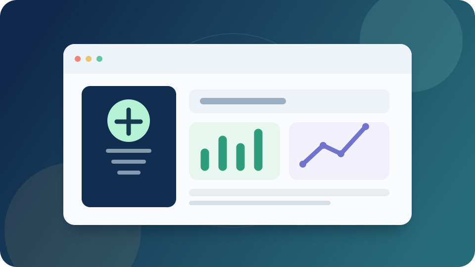
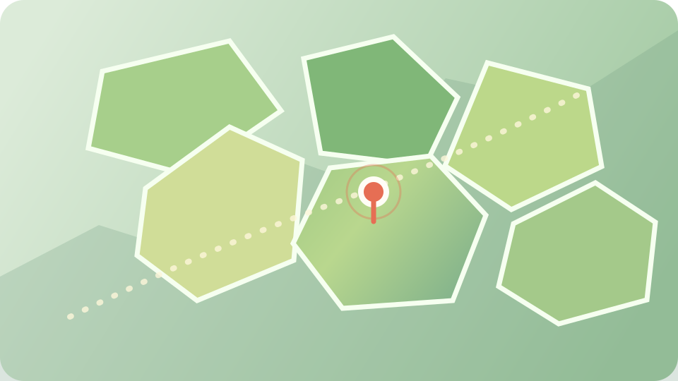

Frontend
HTML, CSS, JavaScript, TypeScript, React, Next.js — interfaces web et parcours utilisateur.

Je conçois des logiciels, agents IA et systèmes d’automatisation qui transforment les idées en solutions rentables.
À propos
Un profil hybride entre ingénierie logicielle, IA appliquée et compréhension des besoins métier.
Je suis GODOME KOFFI, également connu sous le nom de Jean-David, développeur diplômé en développement d’applications et services. Depuis 2021, je réalise des projets web et numériques en freelance, en parallèle de mes collaborations avec TEADIS et DEV-TECH.
Je développe des applications métier, intègre des outils d’IA générative et crée des automatisations, notamment des agents conversationnels reliés à WhatsApp. J’interviens aussi sur la coordination de projets, la formation et l’accompagnement des utilisateurs.
Mon objectif : concevoir des produits numériques utiles aux entreprises et aux utilisateurs, en Côte d’Ivoire comme à l’international.
Compétences
Des fondamentaux web aux agents IA et aux workflows connectés.
HTML, CSS, JavaScript, TypeScript, React, Next.js — interfaces web et parcours utilisateur.
Node.js, Express.js, PHP, Python, XAMPP, MySQL, SQL Server, PostgreSQL, Supabase.
OpenAI, Claude, OpenRouter, agents IA, prompt engineering et assistants métier.
n8n, WhatsApp Business API, intégrations et workflows intelligents.
Azure, Vercel, GitHub, Git — déploiement, collaboration et suivi de projets.
Publicité sur les réseaux sociaux, campagnes Meta Ads et Google Ads.
Analyse de besoins, coordination d’équipe, documentation, formation et accompagnement utilisateur.
Français courant · Anglais technique.
Projets sélectionnés
Applications web, agents IA, automatisations et projets numériques réalisés.

Problème. Rendre les données métier plus faciles à explorer et à comprendre.
Solution. Agent IA qui interroge des données en langage naturel et produit des restitutions structurées et visuelles.
Résultat. Exploration de données dans plusieurs langues via une interface conversationnelle.
Problème. Traiter efficacement les demandes commerciales récurrentes.
Solution. Workflow connecté à une base de connaissances et à WhatsApp Business pour automatiser le premier niveau de réponse.
Résultat. Un parcours conversationnel conçu pour accélérer le traitement des demandes entrantes.
Besoin. Numériser la facturation d’un groupe agricole multi-filières.
Réalisation. Application avec intégration FNE, génération de QR codes et suivi des retours.
Client. Groupe ivoirien des filières café, cacao, anacarde et autres productions.

Problème. Simplifier l’accès aux informations et démarches municipales.
Solution. Portail pour les démarches citoyennes, le suivi des demandes et la gestion des contenus publics.
Résultat. Projet en cours de réalisation avec une équipe, porté par une ambition de centralisation des services.
Besoin. Mettre en relation apprenants et accompagnateurs scolaires.
Contribution. Développement d’espaces de compte et du parcours d’inscription à la plateforme.
Fonctionnalités. Comptes apprenants et accompagnateurs, inscription en ligne.
Problème. Personnaliser un assistant de développement selon le contexte et les habitudes de son utilisateur.
Solution. Kit guidé comprenant contexte utilisateur, commandes dédiées et veille personnalisée.
Résultat. Une base réutilisable pour configurer son assistant personnel.
Problème. Simplifier le recueil d’informations après inscription à une formation.
Solution. Page statique qui ouvre WhatsApp avec un message prérempli.
Résultat. Transmission simplifiée; aucun paiement ni stockage serveur de données.

Problème. Présenter des parcours de formation numérique aux apprenants.
Solution. Site de formation en ligne de la marque TEADIS, avec ressources et parcours numériques.
Résultat. Une vitrine en ligne dédiée aux programmes de formation.
Problème. Regrouper les tâches de gestion marketing et de vente de formations.
Solution. Socle SaaS avec tableau de bord, génération de brouillons, analyse assistée de messages et workflows de préparation de contenus et rapports.
Résultat. Base fonctionnelle; connexions sociales et publication automatique restent à intégrer via les API officielles.

Besoin. Visualiser des parcelles agricoles géolocalisées.
Réalisation. Cartographie de données de plantations pour un groupe des filières café, cacao, anacarde et autres productions.
Client. Groupe agricole ivoirien.

Problème. Présenter un hôtel à Abidjan et faciliter les demandes de réservation.
Solution. Site multilingue avec présentation des chambres, demandes de réservation, espace client et administration.
Résultat. Parcours numérique disponible en ligne pour les visiteurs et l’équipe de gestion.
Expérience
Développement logiciel, missions clients et conduite de projets numériques.
Stage · Applications web, intégration FNE, QR codes et projets IA.
Contribution à des fonctionnalités métier, à la facturation électronique et à des initiatives d’automatisation et d’IA générative.
Projet d’équipe · Portail municipal
Coordination d’un projet de portail numérique visant à centraliser les démarches citoyennes, le suivi des demandes et les contenus publics. Projet en cours.
Côte d’Ivoire · Développement, marketing numérique et formation
Création de solutions web, automatisations, agents IA et contenus numériques; accompagnement et formation d’utilisateurs.
Données géographiques · Agriculture
Contribution à la représentation de données géographiques de parcelles de plantations de cacao en Côte d’Ivoire.
Certifications
11 certificats obtenus en développement, IA, marketing digital, réseaux sociaux et informatique.
Impact mesuré
63,29 USD de dépenses pour trois promotions Meta Ads. La cliente a rapporté des ventes ayant conduit à une rupture de stock. Indicateur mesuré : conversations initiées, et non ventes attribuées.
Contact
Ouvert aux opportunités de développement, de collaboration IA et d’automatisation métier.
Vous recrutez, lancez un produit ou souhaitez automatiser un processus ? Écrivez-moi pour parler du besoin, du contexte et de la prochaine étape.